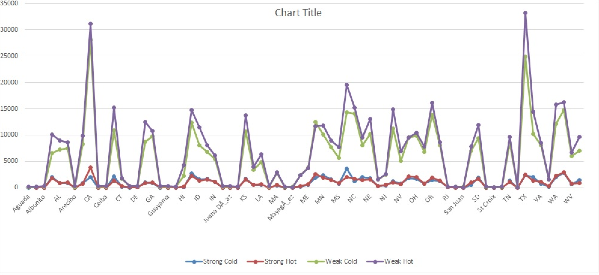

Trend
From 1964 , various states showed different proportions of Strong cold, Strong Hot, Weak Cold, Weak Hot. Few states didn’t record anomalies. Hence the graph gives analysis of only 36 states
- Weak Hot is recorded highest for VA, CA
- Weak cold is recorded highest for TX, CA
- Strong cold is recorded for NC
- Strong Hot is recorded for CA
- CT, ID, NV record equal weak hot
- NC recorded the average Weak Hot among all
Hence eastern states show higher cold anomaly. Though we remain cautious making prediction based on this model, it suggests that yearly proportion of strong cold has fallen below average